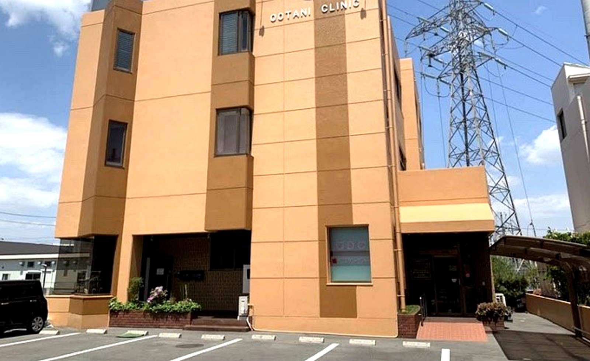
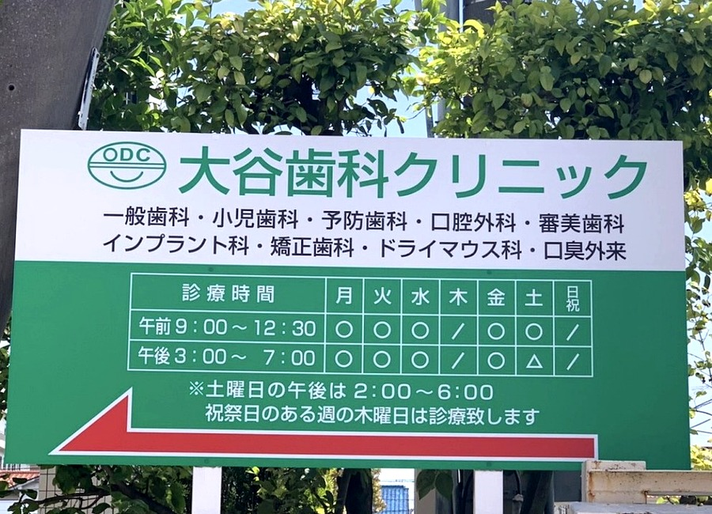
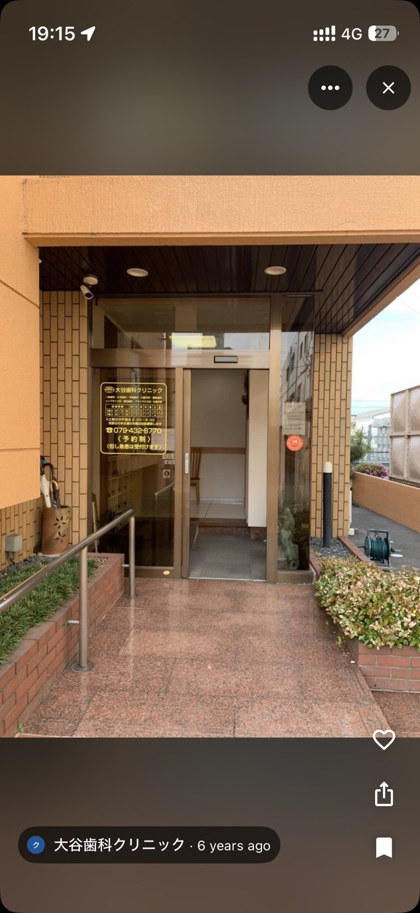
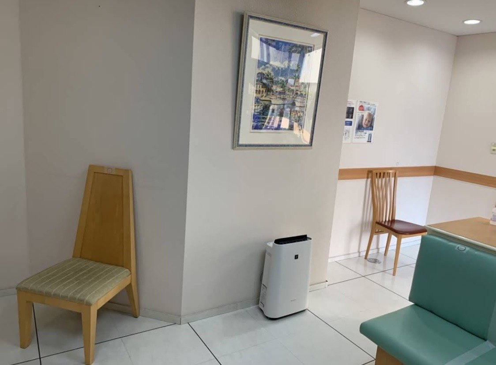
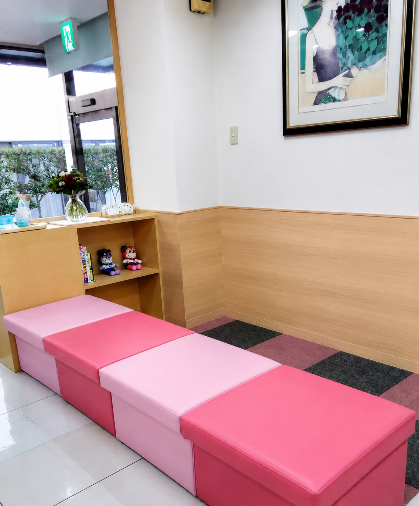
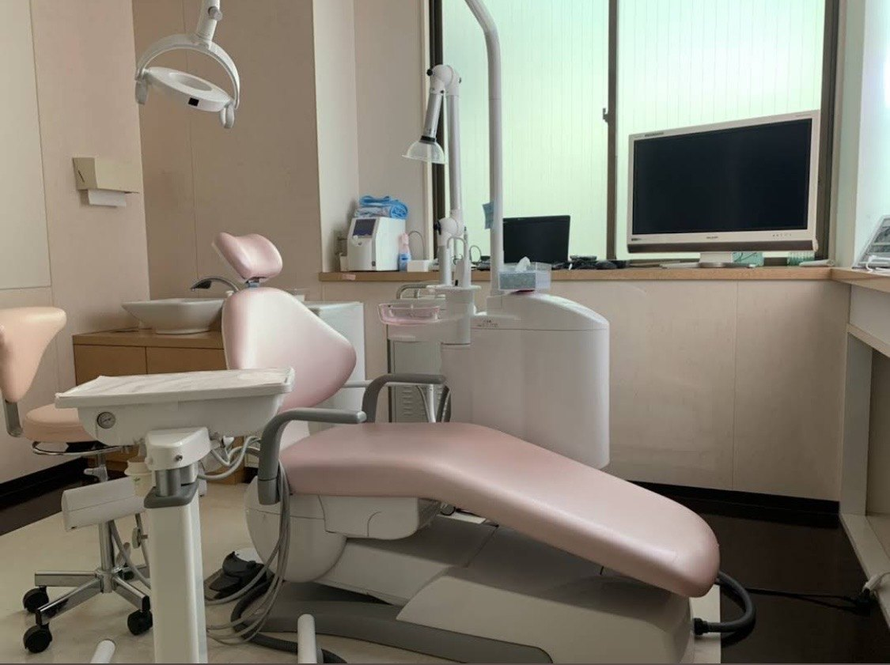

01
40年以上の地域の信頼
長く通ってくださる患者さまとの関係を大切にしています。

地域に根ざして40年以上
お子さまからご高齢の方まで、家族で通える地域の総合歯科医院です。CT完備・口腔内スキャナー導入・口腔外科対応。
「昔からある安心」と「新しい設備」を両立した、地域のかかりつけ歯科医院です。
長く通ってくださる患者さまとの関係を大切にしています。

骨や神経の位置を立体的に確認し、診断に役立てます。

型取りの負担を軽減し、分かりやすい説明にもつなげます。

親知らず・お口のできもの・顎まわりのお悩みもご相談ください。
家族で通える地域の総合歯科医院として、幅広いお悩みに対応します。
外の看板表記に合わせ、見てすぐ分かる形にしています。
| 診療時間 | 月 | 火 | 水 | 木 | 金 | 土 | 日・祝 |
|---|---|---|---|---|---|---|---|
| 9:00〜12:30 | ● | ● | ● | ／ | ● | ● | ／ |
| 15:00〜19:00 | ● | ● | ● | ／ | ● | ▲ | ／ |
▲ 土曜午後は14:00〜18:00 ／ 祝祭日のある週の木曜日は診療します。
JR宝殿駅北口より徒歩5分。駐車場も完備しています。
〒675-0045
兵庫県加古川市西神吉町岸152-3

地域の皆さまに支えられ、当院は40年以上診療を続けてまいりました。長年培ってきた経験を大切にしながら、CTや口腔内スキャナーなどの新しい設備も積極的に導入し、安心して通っていただける環境づくりを心がけています。
院長紹介を見る必要な検査と説明を丁寧に行い、患者さまの不安を減らします。
歯や顎の状態を立体的に把握し、親知らず・口腔外科・インプラントなどの診断に役立てます。
お口の中をスキャンして、負担の少ない型取りや分かりやすい説明につなげます。
来院前に医院の雰囲気が分かるよう、写真を多めに掲載しています。













医院のお知らせや設備、治療に関する情報をInstagramでも発信しています。スクリーンショットではなく、公式Instagramへリンクします。